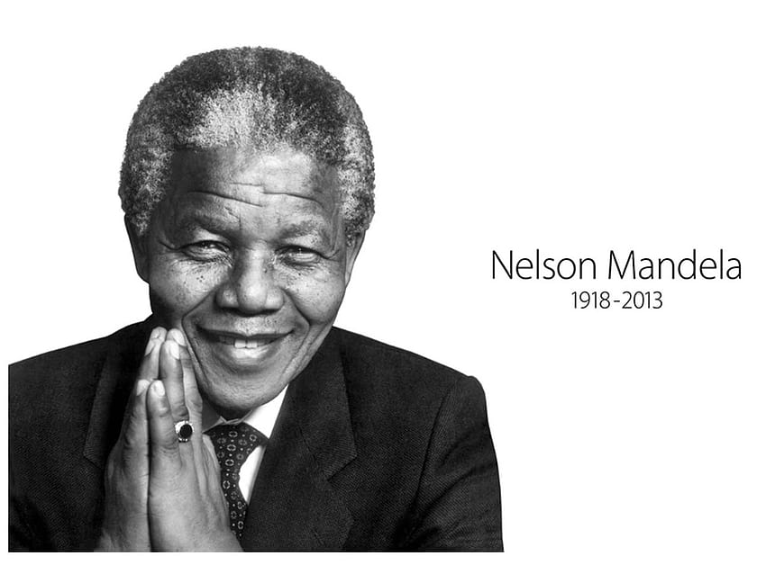

1918-2013
“Do not judge me by my successes, judge me by how many times I fell down and got back up again.”
Nelson Mandela was an outstanding leader of African nationalism and a professional lawyer born on July 18, 1918, in South Africa. He eventually gave up on that, and in 1944 joined the African National Congress. In South Africa, he spearheaded the nonviolent resistance against racial inequality. He was one of South Africa's finest leaders and independence fighters. Mandela battled against the repressive regime alongside the revolutionaries. Nelson Mandela became the nation's first black president, ultimately leading to the overthrow of the white supremacist administration. He will always be seen as a symbol of social justice and equality. At age 95, he passed away on December 5th, 2013.